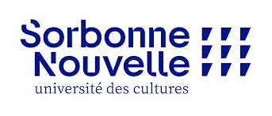

Kathryn RAVER
Master 1 des Sciences du Langage

Mon CV des trois dernières années :
| 2024-2025 | Statut |
|---|
| 2022-2023 | Cette année |
| 2021-2022 | L'année d'avant |
| 2020-2021 | L'année d'encore avant |
Voici les cinq derniers livres que j'ai lu :
- Le chien noir, Lucie Baratte
- Les Essaims, Chloé Chevalier
- Experiences in Translation, Umberto Eco
- In Other Words, Mona Baker
- Ancillary Justice, Ann Leckie